| Cookie | Release Date | Quote | Skill | Magic Candy | Pet |
|---|---|---|---|---|---|
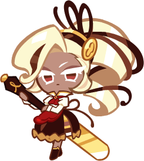 Entremet Cookie |
March 13th, 2026 | "Baking is a delicate art form. Do try to grasp that." | Blasts forward at given intervals, icing the walls with a spatula. While busy icing, all nearby basic Jellies and Bear Jellies are transformed into Entremet Jellies. Level Up for more points for Entremet Jellies. | Creates additional Sugar Toppings during skill, +36,400-91,000 pts for Sugar Toppings | 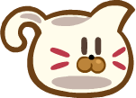 Meowsuring Cup |
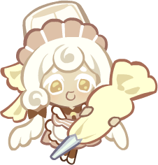 Angel Chiffon Cookie |
February 27th, 2026 | "I’ll make desserts that can make all Cookies happy!" | Flies up wielding a piping bag at given intervals. Squeezing the piping bag creates whipped cream fairies, which fly towards cakes to complete them. A large Cake appears at the end of the skill, which even more whipped cream fairies decorate. Level Up for more points for Chiffon Cake Jellies. | Creates tiny whipped cream fairies at given intervals. The fairies fly a certain distance before creating mini Chiffon Cake Jellies. The stronger the enchanted power, the more points for mini Chiffon Cake Jellies. | 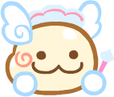 Bread Fairy |
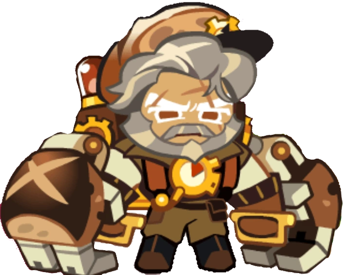 Pain de Campagne Cookie |
February 12th, 2026 | "If someone's going to stay behind, it always has to be me, got it?!" | Is dispatched to an active Rift at certain intervals. Various Rifts appear at certain distances, and the Cookie leaps into the air upon getting in range. The Skill Button is activated in front of each Rift, and when tapped, the Cookie forces Rifts closed with his powerful mechanical arms. Each closed Rift creates multiple Rift Fragment Jellies. The final largest Rift can only be closed by tapping the Skill button multiple times, but creates even more Rift Fragment Jellies. Level Up for more points for Rift Fragment Jellies. | A Rift forms on the ground at certain intervals. The Cookie leaps towards the Rift, slamming down with powerful fists before forcing it closed. The stronger the enchanted power, the more points for Rift Fragment Jellies. | CASQUE |
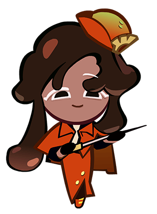 Dark Fondue Cookie |
January 28th, 2026 | All performance reviews are made fairly. Nothing personal. Haha." | Selects New Recruits from each division at fixed intervals. Once they have gathered, begins assessing their Skills: one hitting rocks with mallets, one collecting Jellies with a vacuum, one emitting rift-fixing waves, and one firing a string gummy gun, each earning points with their abilities. Level Up for more Skill Assessment Points. | Each time the Skill activates, one Exceptional New Recruit will be included. These recruits demonstrate outstanding abilities in the Skill Assessment tests, granting higher points. The stronger the enchanted power, the more Skill Assessment Bonus Points. | Stick-E Cheese |
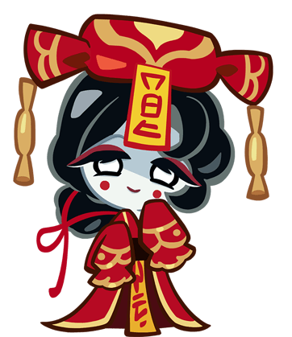 Xitang Cookie |
January 14th, 2026 | "My beloved... Where have you gone... You're gone... Again... My dearest..." | Rides on a palanquin at fixed intervals. Jumps to catch candy boxes thrown by the porter. If caught, the boxes bursts into a scatter of Xitang Jellies. Catching the final, largest candy box releases an even greater shower of Xitang Jellies. Level Up for more points for Xitang Jellies. | After the skill ends, the Cookie receives Xitang Hop counts. While counts remain, jumping and tapping Slide causes the Cookie to hop and land three consecutive times, earning points. The stronger the enchanted power, the more Xitang Hopping Points. | 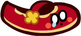 Scarlet Shoe |
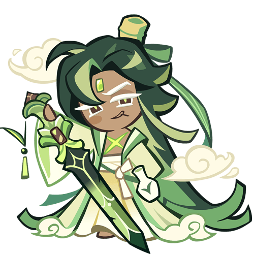 Bamboo Blade Cookie |
December 30th, 2025 | "Aww, it took you so long to find me! I've been tailing you for quite some time, you know." | Enters a bamboo grove at regular intervals. When skill counts are available, tapping the button makes the Cookie burst forward while slashing the surrounding area. Exhaust all the skill counts to burst forward while slashing rapidly before unleashing a final powerful strike slicing across the entire screen. Each slash creates Bamboo Leaf Jellies. Level up for more points for Bamboo Leaf Jellies. | Does a Double Bamboo Strike at regular intervals. Obstacles within range of the strike are destroyed, creating additional Bamboo Leaf Jellies. The stronger the enchanted power, the more points for Bamboo Leaf Jellies. | [image unavailable] Bamboo Flute |
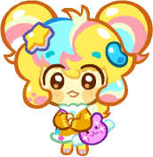 Dreamjelly Cookie |
November 14th, 2025 | "I missed you! Sooo so much!" | Creates Dreambear Jelly Party Blast items at certain intervals. Upon collecting the item, the Cookie will enter Blast Mode, and all Basic Jellies and Bear Jellies will turn into Dreambear Jellies, while Dreamstar Jellies are created in the air. Level up for more points for Dreambear Jellies and Dreamstar Jellies. (The Tricolor Dreambear Jellies every 4th activation recieve bonus points for all types of basic Bear Jelly.) | A Winged Rainbow Bear appears at certain intervals. Come in contact with it and it will fly to the right, creating Rainbow Dreambear Jellies. The stronger the enchanted power, the more points for Rainbow Dreambear Jellies. | 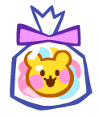 Bear Jelly Bundle |